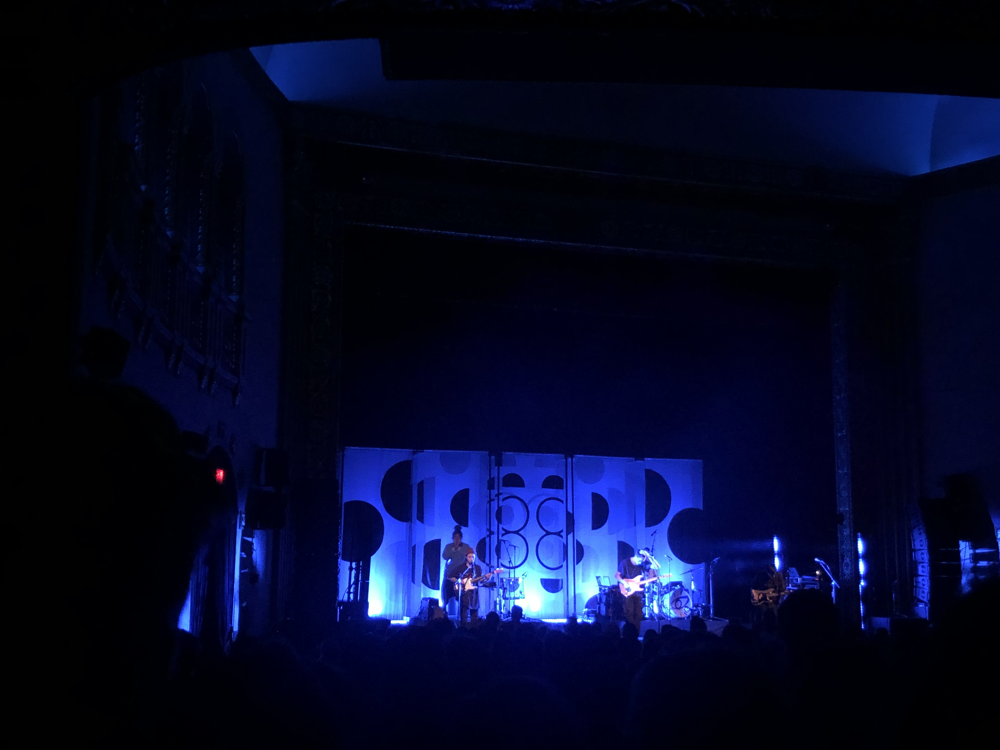
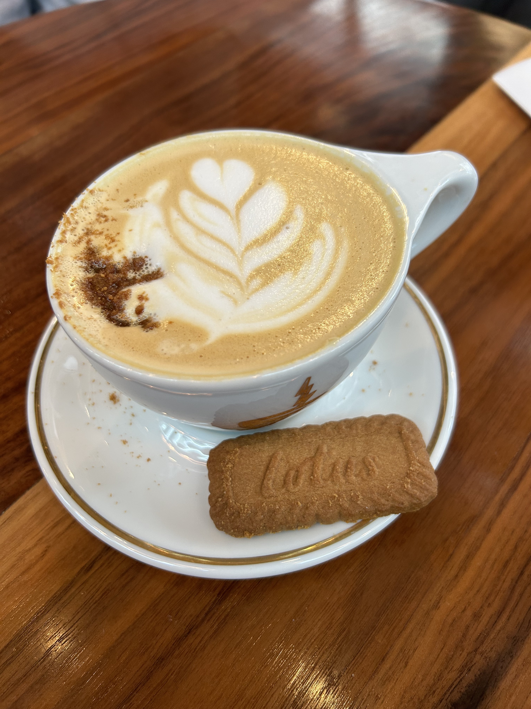
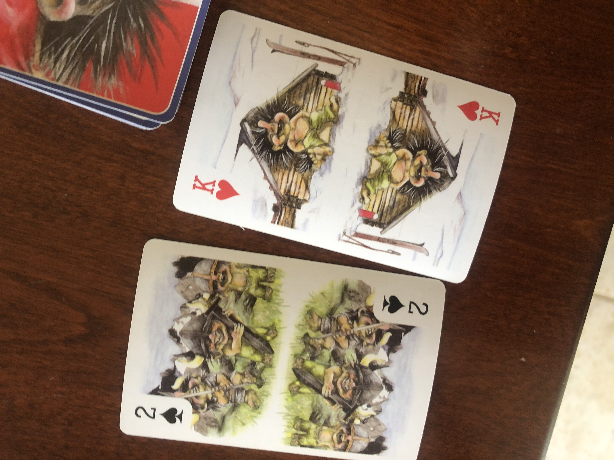
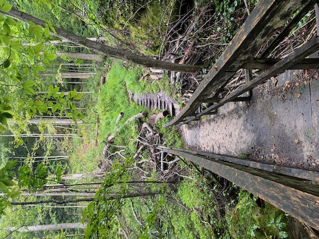
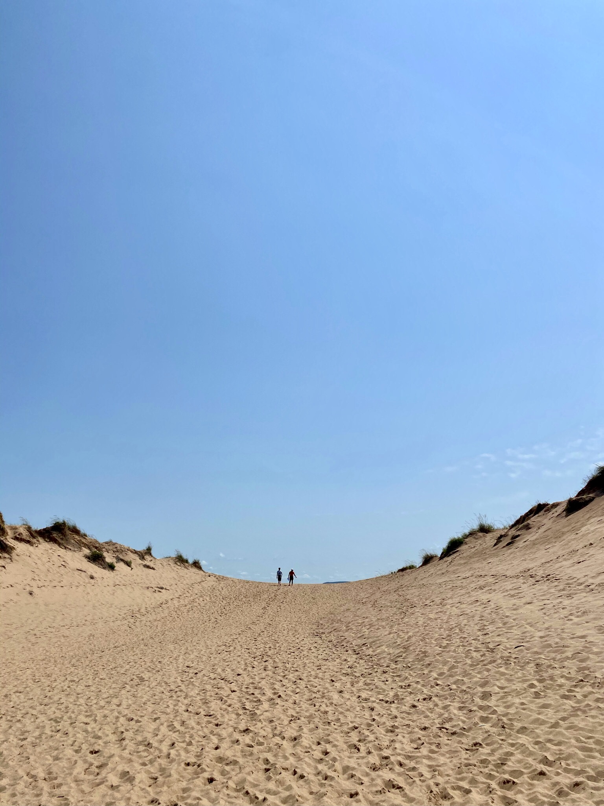
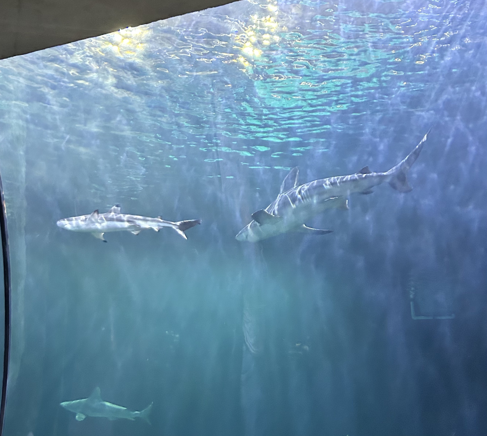

About
I was born and raised in Louisville, Kentucky, and I lived there until moving to Ann Arbor for college. I have an older sister, Emily, who lives in Los Angeles.
I invite you to check out some of my hobbies below! Through these hobbies, I've learned so much and I'm proud of how deeply I dedicate myself to the things that I care about.
Weightlifting
I've been weightlifting for around six years, but I came much more serious about it in the last two or three years.
I'm incredibly proud of the work I've put into weightlifting, both mentally and physically. It's by far my favorite hobby. I love being able to see the results of my hard work. It's incredibly rewarding to set goals and work, on my own volition, to achieve them. I prove to myself every session how strong and determined I am. I love doing research about weightlifting, especially since exercise science is a constantly evolving field.
Geography
My love for geography started on GeoGuessr, a game in which you're placed in a random location on Google Street View, and you have to figure out where you are. I've picked up very niche but incredibly fascinating bits of knowledge, such as the difference between Japanese and Taiwanese utility poles. I even wrote a paper about the social consequences of GeoGuessr's use of Google Street View.
I then started doing Sporcle geography quizzes, and I haven't looked back. I can recall all 197 countries in 8 minutes, and I can recall 194/197 world capitals (I'm working on you, Vilnius, Malabo, and Thimphu). I love to learn new things, and learning about the world that I live on is so incredibly fascinating to me; I feel so much more knowledgeable about the world around me. I feel so proud of myself when I can point to any country and name it, as well as name its capital (almost...).
Music
I'm an avid music lover -- especially live music. I've had the privilege of attending dozens of concerts, and I can't wait to see more of my favorite artists in the future. My favorite concerts that I've attended are Hippo Campus and Arcade Fire.
Crocheting

I first tried crocheting in 2019, when I joined the Crochet Club hosted by Lloyd Scholars for Writing and the Arts, the Living-Learning community that I belong to at the University of Michigan.
Though it was unlike anything I tried before, I immediately caught onto it. It challenged me, and I was impressed by the wide breadth of knots that you could make.
My favorite part of crocheting is that I can make projects for other people. For my partner and my second anniversary, I crocheted him a beanie. This was the biggest project I had taken on, and it turned out great. A few years ago, I crocheted my friends' intials and gifted my work to them as holiday gifts. I did the same for my dad, but spelled out "DAD" in individual letters. I made my mom a coaster, since she's a coffee lover, just like I am.
Coffee
Speaking of coffee... trying new foods is another hobby of mine! I especially love trying new coffee shops. Visitng a coffee shop, sitting by the window in the sunlight, and playing cards with a friend sounds like the perfect afternoon to me.
Board Games
I adore playing games with my friends. I've always been a strategic thinker. There's a running joke in my family about playing the Winnie the Pooh memory game when I was little. Winnie the Pooh and I must have had a spiritual connection when I was young, because I would blow that game out of the water. The purpose of the game is to turn over two cards at a time and try to make a match. At 5 or 6 years old, I would have more matches than the rest of my family combined.
Hiking
Hiking is another way that I love staying active! Some of my favorite hikes have been in Kentucky national parks.
Travelling
I love travelling and exploring the world. This photo was taken in Sleeping Bear, Michigan. The sand dunes were gruelling, but finally making it to the Lake Michigan shore was incredibly rewarding.
Museums
I love attending all types of museums. The Shedd Aquarium in Chicago, above, and the Natural History Museum in New York City have been some of my favorites.